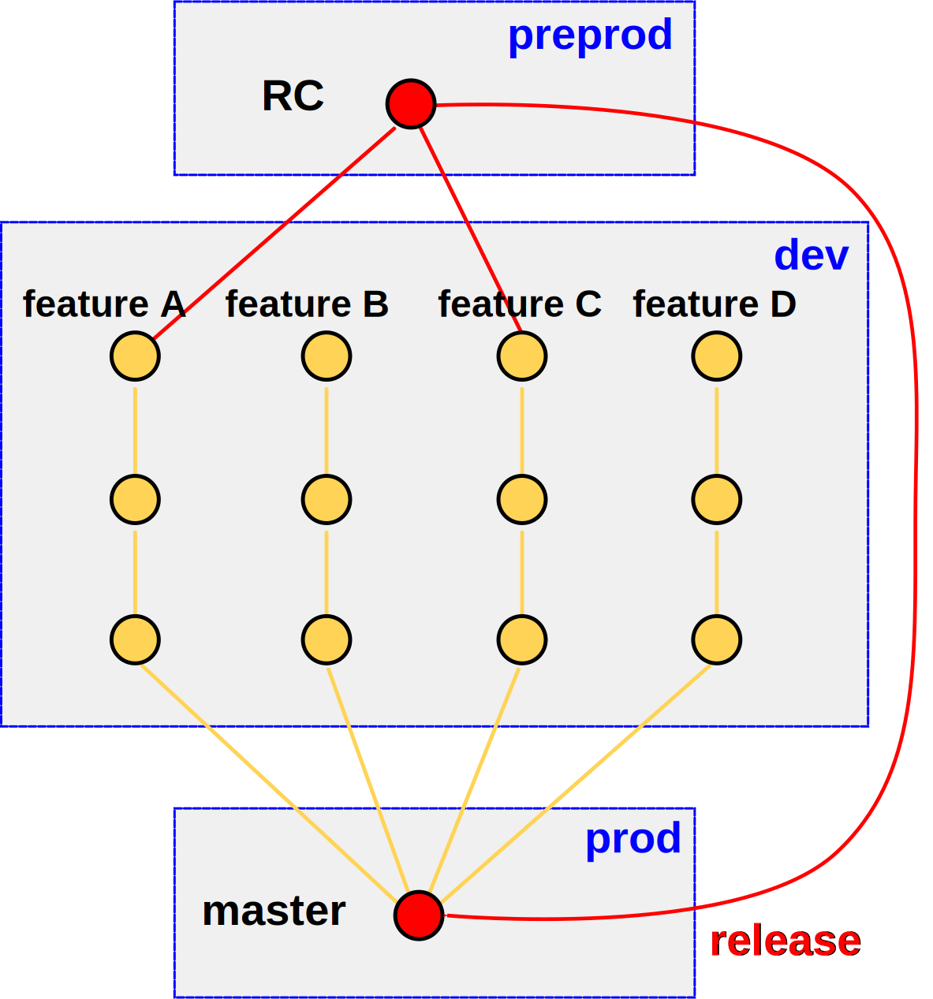

Continuous delivery
Context
LesFurets.com
- 17 developpers
- 1 QE, 1 Ops, 1 Architect
LesFurets.com
- 1 website, 1 Backoffice
- 10 Serveurs
- 1 Code base
- 300k lines of code, 30k tests
- 200 Selenium tests
2012 - Monthly releases
- 6 weeks sprints
- Subversion : Trunk + 1 support branch
- Build : 15', Selenium : 1h
- Testing phase : 3-4 days
- Manual release : 1h 30'
2014 - Daily releases
- Developments based on user stories
- git : master + pull requests
- What's ready go live on D + 2
- Build : 3' + Selenium : 10'
- Release procedure : 10'
- January to September : 143 releases
Continuous delivery
Step by step
Lifecycle of a change
- Implementation
- Continuous integration
- Validation
- Delivery
- Release
- Operation
Operation


System AND functional monitoring
Errors & logs
- 200 stacks a day
20% js - 1 stack = 1 mail
- 1h stack = 1 mail
- 24h stack = 1 mail
Business reports
Excel, emails, backoffice ...
Track everything
Business meets Ops
Release

Automate
"Infrastructure as code"
Packaging


Deployment
0 downtime
Blue/green
- Doubled production environment
- Loadbalancer
Delivery
Versionning model
- Trunk/branch
- Trunk based deployment
- Pull request
We deliver ...
finalised developments

feature = bugfix, configuration change ..

Who's ready goes by ...
The release goes on
Validation
- Manual tests
- Selenium
- Code reviews
- Showcase/functional validation
Pull requests => isolation
- Dog feeding
- Conflicts

Continuous integration
On every commit
- Compilation
- Automated tests
- Merge of all branches
Octopus


Octopus
- Build a test environment
- Detect conflicts
- Plug/unplug branches easily
Managing conflicts
lots of optionsresolve is the worst one
Proof of concept

Implementation
Feature toggle
When ?
- Lots of conflicts
- Long term branch
Big refactorings
- Too many conflicts
- Long term task
Special treatment
Blocks the release
Blocks the release